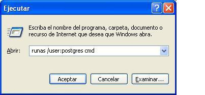
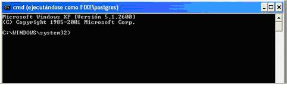
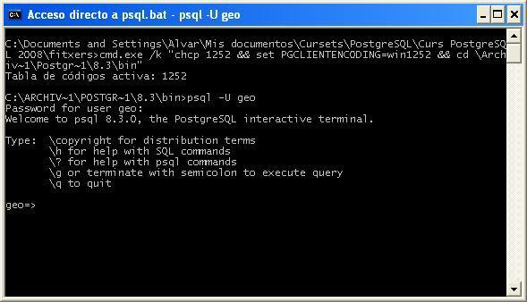

Nota Previa
En este tema, probaremos hacer tareas de administración de Postgres tanto desde PgAdmin (entorno gráfico) como desde una consola (entrando en psql o no). En este segundo caso, muchas veces tendremos que hacer las cosas como un usuario postgres del S.O.
Para tener un terminal como usuari postgres de S.O. en Linux, podemos desde una consola normal cambiar al usuario root, y desde ahí cambiar a postgres. Concretamente en Edubuntu podriamos hacerlo así:
$ sudo su - postgres
Password:
$
donde la contraseña es la del usuario, para poder hacer el sudo. En otros Linux seguramente tendríamos que cambiar a root, i después a postgres.
Desde Windows lo podemos hacer abriendo una consola (Símbolo de sistema), y desde ahí abrir una nueva consola, esta vez del usuario postgres, con el comando runas:
> runas /user:postgres cmd
recuerda que la contraseña que habíamos puesto (si no se te ha ocurrido otra cosa) era qwerty.
Nos podríamos ahorrar abrir la primera consola si ponemos el comando anterior en Inicio ->
Ejecutar

Así se nos abrirá la consola como un usuario postgres, como podemos comprobar en la barra de título de la siguiente imagen:

Haremos muchas pruebas de conexión de distintos usuarios sobre distintas Bases de Datos.
Para probar todas estas conexiones, seguramente lo más útil será utilizar psql, ya que en pgAdmin tendríamos que hacer una conexión para cada una. En Windows lo más cómodo será abrir la consola que tenemos en Inicio -> Todos los programas -> PostgreSQL 9.2 (o bien 9.3) ->Command Prompt , ya que el directorio por defecto será donde están los programas de PostgreSQL
O directamente ejecutar el fichero psql.bat que tenéis en este tema.
Recuerda que si ponemos psql.exe sin nada más intentará conectar como un usuario igual que el de S.O. y una B.D. llamada igual. Por tanto, lo más habitual será poner las opciones -U (para indicar el usuario) y -d (para indicar la Base de Datos; si no la ponemos intentará entrar en una BD con el mismo nombre que el usuario). La siguiente imagen nos muestra un ejemplo:
